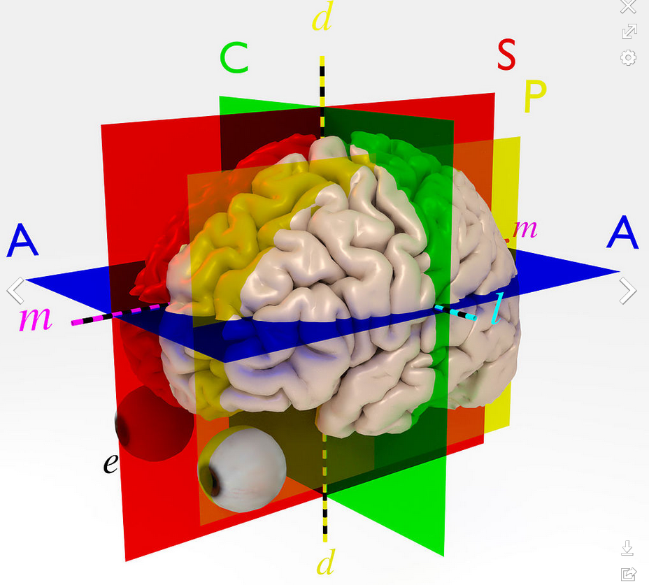

Normal anatomy terms
| Term | Description |
|---|---|
| Anterior | At or near the front of the body (front view) |
| Posterior | At or near the back of the body (back view) |
| Midline | An imaginary vertical line that divides the body equally (right down the middle) |
| Lateral | Farther from midline (side view) |
| Medial | Nearer to midline (side view) |
| Superior | Toward the head/upper part of a structure (bird’s-eye view, looking down) |
| Inferior | Away from the head/lower part of a structure (bottom view, looking up) |
| Superficial | Close to the surface of the body |
| Deep | Away from the surface of the body |
| Proximal | Nearer to the origination of a structure |
| Distal | Farther from the origination of a structure |
Neuroanatomical axes
Anatomical axes, planes and localisations in the human brain. Three axes:
- d: Axial, Superior-inferior or Dorsoventral axis (yellow)
- l: Left-right, or Lateral axis (cyan, blue-green)
- m: Medial, Antero-posterior or Rostral-to-caudal axis (magenta)
Three major planes:
- A: Axial (blue), containing the lateral axis and also the Medial axis
- C: Coronal plane (green), containing the axial axis and the lateral axis
- S: Sagittal plane (red), containing the axial axis and the medial axis
Also:
- e: The eye at the anterior end of the brain
- P: A Parasagittal plane (yellow) through one eye; parasagittal planes comprise the class of
planes parallel to (and therefore lateral to) the sagittal plane.
:ID: 597b84be-2ef5-48fa-83da-7f2fe86bf072

– References:  https://www.visiblebody.com/blog/anatomy-and-physiology-anatomical-position-and-directional-terms
https://www.visiblebody.com/blog/anatomy-and-physiology-anatomical-position-and-directional-terms